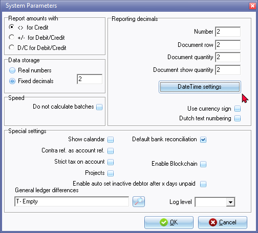

System parameters
This option allows you to set the options and parameters in which osFinancials should store and display amounts and numbers to be displayed on screens, reports and documents and special settings.
|
|
The following error may occur, when printing "Budget vs actual" and/or "This year vs last year "reports: "Type conversion error 'Val':Expression TRpExpression46" You need to set the "Number Format" of your operating system to resolve this issue. |

To access the System parameters settings:
- On the Setup ribbon, select Setup → System parameters.

- If necessary, change the following options:
- Report amounts with - This setting is not applicable to osFinancials5.
- Data storage - Select Fix decimals and specify the number decimals in which numbers and amounts should be rounded off. If you select Real numbers, the numbers and amounts will be stored in osFinancials5 with an "unlimited" number of decimals. In cases where percentages are calculated on amounts, e.g. VAT/GST/Sales Tax, you may select to fix the number of decimals to limit any rounding differences.
- Reporting decimals -
- Number - Specify the number of decimals to be displayed on reports. It is recommended that this be set to 2.
- Document row - Specify the number of decimals to be displayed on documents. It is recommended that this be set to 2.
- Document quantity - Specify the number of decimals to be displayed on document quantities. It is recommended that this be set to 2.
- Document show Quantity - It is recommended that this be set to 2.
- Date / Time Settings - This will launch the Regional and language options in which you may configure or set the formats of your operating system. (See – Setup → Company info - Options).
- Use currency sign - Select to use the currency symbol as set in the Regional Settings of your Operating System to be displayed on screens, reports and documents.
- Dutch text numbering - All other countries should leave this blank. This should only be selected if the amounts in words are written in different rules to that of the English language, as is the case in the Netherlands language. The amount in figures and words is used by osFinancials in the Create receipts option of Receipt journals.
- Speed - Do not calculate batches - By default, the totals of batches are calculated each time you access the Batch type selection screen to select a Batch type. Selecting this option will turn this automatic calculation off.
- Special settings -
- Show calendar - By default, the calendar will not be displayed when opening a Set of Books. You need to manually launch it on the Calendar (Default ribbon). If you select this field (tick), the Calendar will then be automatically displayed each time you Open the Set of Books.
- No warning unposted - This option is not applicable to osFinancials5.
- Contra ref. as account ref. - By default, this option (Contra reference as account reference) is not selected. This is the global settings for batches.
- Strict tax on account - By default, this option is not selected. This is the global settings for batches.
- Projects - By default the Projects feature is not enabled. If this option is selected, it will activate the Projects on Projects (Default ribbon).
- Default bank reconciliation method - This option is selected, by default, to do bank reconciliation in the default method in separate payments and receipt batches linked to a bank account. If you wish to import transactions from bank statements in Bank reconciliation, you need to de-select (remove the tick) in this field.
|
|
The Bank import plugin allows you to import the transactions from your bank statement and allocate these transactions to the accounts. |

- Block chain - Activate block chain.

- Enable auto set inactive debtor after x days unpaid - To be advised.
- General ledger differences - You may create a general ledger account (Setup → Accounts) and select that account in this field. If there any rounding differences, it will be posted to this account.
- Log level – “Off” is the default setting. It may be set up to level 7. You may print the Log report in Setup → Access control.
- Click OK.